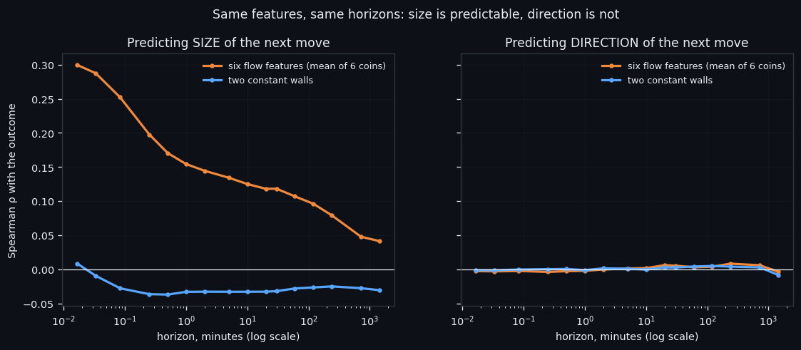
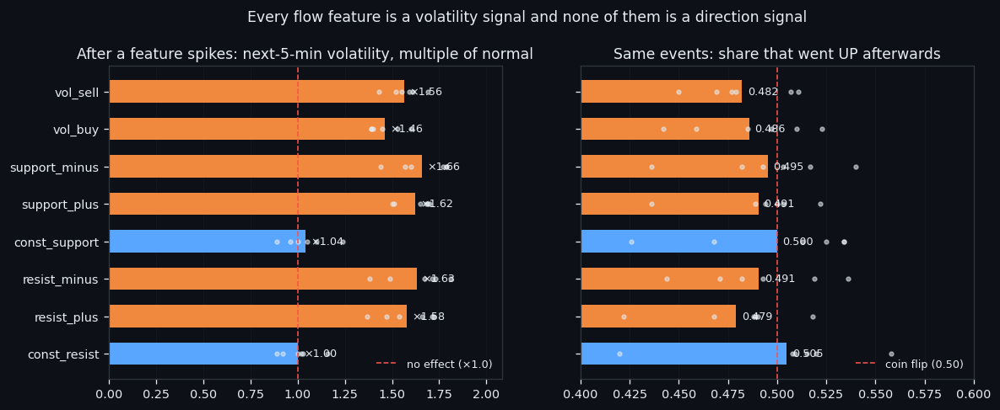
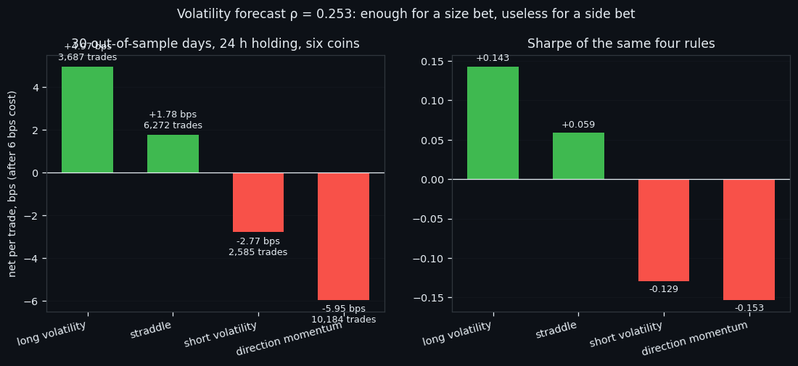

The Order Book Tells You How Far, Never Which Way
We asked eight order-book features the same two questions at 16 horizons from one second to a day, on six coins: how far will the price move, and which way. Size answers — ρ 0.30 at a second, still 0.11 at an hour. Direction never does: -0.002 at a minute, -0.003 at a day. Then we bet real rules on both answers over 30 out-of-sample days: the volatility bet makes +4.97 bps a trade, the direction bet loses 5.95. This is the measurement that decides what our bots are allowed to bet on.
① Two questions, sixteen horizons
Two questions look alike and are not. *How far will the price move in the next H seconds asks for a size. Which way* asks for a sign. We put both to the same eight order-book features, on the same windows, at **16 horizons from one second to 24 hours**, on all six coins — and let the answer be a pair of curves rather than an opinion.
The size question answers. Averaged over the six flow features and six coins, the rank correlation with the size of the coming move is ρ = 0.299 at one second, 0.154 at a minute, 0.107 at an hour and 0.041 at a day. It decays, but it never turns into noise — at every horizon we measured, more flow means a bigger move.
The direction question does not answer. The same features, the same windows, the same coins: **-0.003 at one second, -0.002 at a minute, +0.003 at an hour, -0.003 at a day.** Those are not weak signals that need a better model. On the scale of the left-hand curve they are a flat line at zero.
The two constant walls behave differently from the flows, and in a way worth naming: their correlation with the coming move size is negative (-0.033 at a minute) — a thick standing wall goes with calm, not with a storm. It is the only stable directional-ish statement in this entire battery, and it is about volatility, not about which way the price goes.
One consequence shapes everything we build. A bot that bets on how much is playing a game where the measurement supports it. A bot that bets on which way is, at these horizons, flipping a coin with a fee attached.

② A spike is activity, not a side
Why should a burst of order-book activity say nothing about direction? Look at what an event actually is. Take every moment a feature spikes above its own normal level and measure the next five minutes:
| feature | volatility after the spike | share that went up | |---|---|---| | support_minus | ×1.66 | 0.495 | | vol_buy | ×1.46 | 0.486 | | vol_sell | ×1.56 | 0.482 | | const_resist (wall) | ×1.00 | 0.505 | | const_support (wall) | ×1.04 | 0.500 |
Every flow feature multiplies the next five minutes' volatility by 1.46–1.66. Every one of them splits up and down within a few points of 0.500. Even `vol_buy` — literally the volume of aggressive buying — is followed by an up move 48.6% of the time. Buying pressure does not mean the price goes up; it means something is happening, and the other side is usually there to meet it.
The walls are the control that makes the reading credible. A spike in a standing wall gives ×1.00 and ×1.04 — no effect at all. If our measurement were picking up some generic "activity" artefact, the walls would show it too. They do not.
The mirror image of the same fact is the quiet market. Split the tape into rising, falling and sideways stretches and measure the flow level in each: rising -0.04σ, falling -0.03σ, sideways -0.42σ. A sideways market is not a market with balanced buying and selling — it is a market where the flows have frozen. That is why "how far" is predictable at all: activity clusters. The BTC autocorrelation of `vol_buy` confirms the clustering directly — 0.506 at one minute, 0.608 at an hour, still 0.352 at a day. Loud stays loud for hours; up does not stay up.

③ Betting on size, and the graveyard of direction bets
If size is predictable and direction is not, the honest test is a bet on size. We ran four rules on 30 out-of-sample days, six coins, 24-hour holding, 6 bps of cost per round trip, with the volatility forecast (ρ = 0.253 pooled, 0.30 on BTC) as the only input:
| rule | trades | net per trade | win rate | Sharpe | |---|---|---|---|---| | long volatility (bet a big move comes) | 3,687 | +4.97 bps | 41.6% | +0.143 | | straddle (both sides) | 6,272 | +1.78 bps | 49.1% | +0.059 | | short volatility (bet on calm) | 2,585 | -2.77 bps | 59.9% | -0.129 | | direction momentum | 10,184 | -5.95 bps | 38.1% | -0.153 |
Read the win-rate column against the money column and the shape of this market becomes visible. Long volatility wins only 42% of the time and still makes +4.97 bps per trade — most bets are small losses paid for by rare large wins. Short volatility wins 60% of the time and loses money — many small wins wiped out by the occasional storm. That asymmetry is not a bug in the rule; it is what a fat-tailed market looks like from the inside.
The directional rule is the one to keep in mind: 10,184 trades, -5.95 bps each, Sharpe -0.153. It is the same result the horizon curves predicted, now counted in money. And it is not an isolated failure — a separate intraday directional test over the same data finished at **-346% net across 1,344 trades with a 19.3% win rate**.
Two limits before anyone builds on this. First, +4.97 bps per trade is a real edge and a thin one: it survives 6 bps of cost and would not survive much more, so execution is not a detail here, it is the strategy. Second, the forecast decays with horizon — strong at seconds, weak at a day — so this edge lives at short holdings and disappears if you stretch it.
What we take forward: our bots are allowed to ask "is a move coming and how big", and they are never allowed to answer "which way" from these features alone. Direction has to come from somewhere else — the geometry of the price itself — and that is a separate line of work.

If this changed how you read the tape, the natural next step is Volume Is the Fuel — Not the Steering Wheel — We recorded the Binance order book every second for six coins over five months and ran eighteen tests on what volume really does.
Volume Is the Fuel — Not the Steering Wheel
We recorded the Binance order book every second for six coins over five months and ran eighteen tests on what volume really does.
About Market Research Lab — What We Collect and Why
Most market commentary is storytelling.
From Calm to Calm: a Standard for What Counts as a Signal (BTC)
We stopped defining market signals with a stopwatch.
The Wall That Goes Quiet: What Resting Liquidity Predicts
We measured resting limit liquidity sitting on both sides of the book second by second across six coins, and asked the only question that matters:….
Comments
Discussion is powered by GitHub. Enable it by adding secrets/giscus.json (repo IDs from giscus.app).